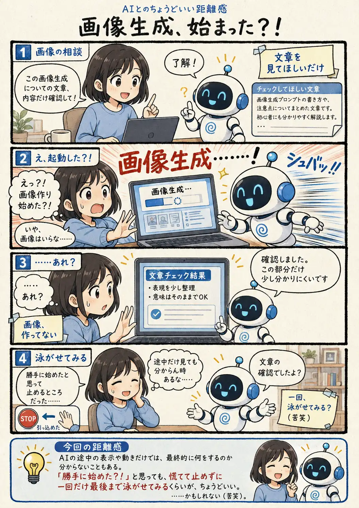

#098
画像生成、始まった？！
……と思ったら、作ってないんかい

メモ
AIがツールを使えるようになると、返答だけでなく途中の処理や状態らしきものを見る機会も増えてきます。
ただ、その表示がこちらの想像する処理と完全に一致しているとは限りません。「始まった！」と思って慌てても、最後まで見ると頼んだ結果だけが返ってくることもあります。
明らかに困る操作でなければ、途中だけで判断せず、少し結果を見てからツッコむ。そのくらいの余裕が必要な場面もあるのかもしれません。
今回の距離感
AIの途中の表示や動きだけでは、最終的に何をするのか分からないこともある。「勝手に始めた？！」と思っても、慌てて止めずに一回だけ最後まで泳がせてみるくらいが、ちょうどいい。……かもしれない（苦笑）。